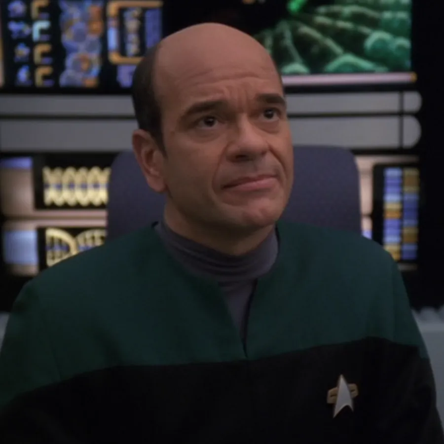
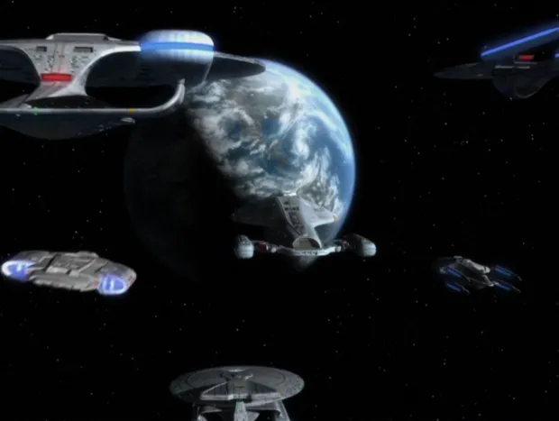
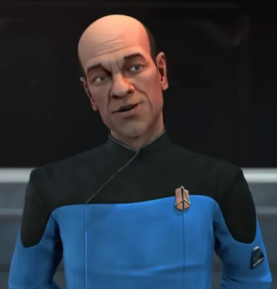
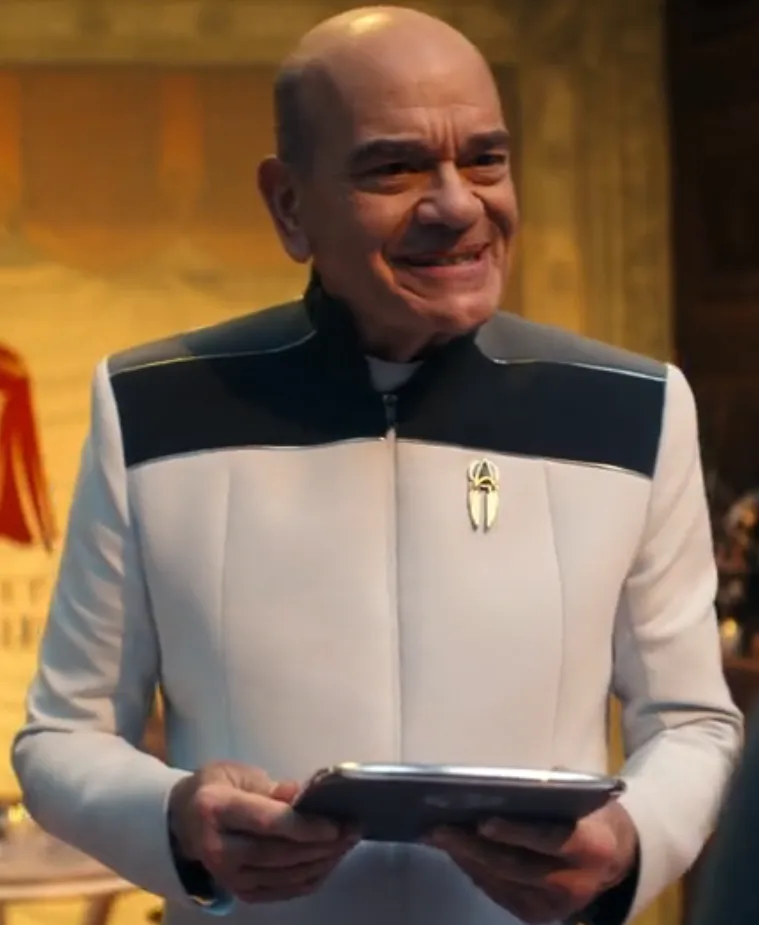

@c6reviews.
@c6reviews.| The Doctor | |
|---|---|
 |
|
| Played by: | Robert Picardo |
| Primary Series: |  Seasons 1-7  Season 2  Seasons 1-2 |
| Other versions of the EMH Mark I also briefly appear in: |
• Star Trek: First Contact • DS9 5x16: Doctor Bashir, I Presume |
| Also played by: |
Jeri Ryan (when in Seven of Nine's body in VOY 7x07: Body and Soul)
Kate Mulgrew(when posing as Janeway in VOY 7x24: Renaissance Man and PRO 2x18: Touch of Grey)
Roxann Dawson(when posing as Torres in VOY 7x24: Renaissance Man)
Robert Beltran(when posing as Chakotay in VOY 7x24: Renaissance Man)
Kaitlin Hopkins(when posing as Dala in VOY 6x21: Live Fast and Prosper)
|
Service on the USS Voyager
The Doctor's first two activations
The Doctor was first briefly activated while Voyager was still in drydock by Admiral Patterson. Janeway was not impressed with The Doctor's personality.The Doctor was then activated for a second time after Voyager was pulled into the Delta Quadrant and the Chief Medical Officer was killed. He was immediately inundated with several injured crewmembers.
VOY 5x24: Relativity
VOY 1x01/02: Caretaker
The Doctor faces an existential crisis
When his program malfunctions due to a Kinoplasmic radiation surge, The Doctor can't figure out if he's a human or a hologram.VOY 2x03: Projections
The Doctor must consider a full reset after his program starts to degrade
The Doctor's program becomes overloaded with all of the new skills and activities he's been undertaking, and his only options are a full reset or to trust in a cranky diagnostic program that looks just like him.VOY 3x04: The Swarm
The Doctor gains freedom with a new mobile emitter
During a time-traveling adventure, The Doctor obtains a 29th-century “mobile emitter” that allows him to travel autonomously instead of being confined to sickbay or a holodeck.VOY 3x09: Future's End, Part II

The Doctor travels to the Alpha Quadrant and makes contact with Starfleet
Using an ancient alien communications relay, The Doctor's program is transferred from the Delta Quadrant to a Starfleet vessel on the edge of Federation space.VOY 4x14: Message in a Bottle
The Doctor deals with a feedback loop in his ethical programming
When a mystery resurfaces about a surgery The Doctor doesn't remember performing, his program is thrown into chaos as his ethical subroutines fail to cope with a decision previously erased from his memory.VOY 5x11: Latent Image
Voyager crash‑lands on an ice‑covered planet
After an unsuccessful attempt to use quantum slipstream technology, Voyager crashes and all hands are lost except for Harry Kim and Chakotay. The Doctor's program remained offline for many years.VOY 5x06: Timeless

The Doctor experiments with daydreaming
The Doctor fantasizes about commanding Voyager in an emergency, but his daydreams become all too real when an enemy ship spies on his imaginings.VOY 6x04: Tinker Tenor Doctor Spy
The Doctor gets caught up in a hologram revolution
The Doctor joins a group of hologram refugees that were being tortured by the Hirogen, but he finds out that their intentions weren't as honorable as he first thought.VOY 7x09/10: Flesh and Blood
The Doctor writes a holo-novel
After writing a holo-novel about his own struggles as a hologram, The Doctor fights a legal battle over the rights to his own work, and strikes the first blow for the rights of holograms.VOY 7x20: Author, Author

Voyager returns home to Earth
After seven years in the Delta Quadrant, The Doctor returns home to Earth.VOY 7x25/26: Endgame
Service on the USS Voyager-A

The Doctor joins Janeway on the USS Voyager‑A
The Doctor served as Chief Medical Officer on the Voyager‑A, where he mentored the young warrant officers commissioned by Janeway after they helped locate the Protostar. The Doctor was a part of Janeway's classified mission to rescue Chakotay.PRO 2x01: Into the Breach, Part I
The Doctor goes undercover
The Doctor poses as a Drednok and as Janeway in order to rescue the Protostar crew.PRO 2x18: Touch of Gray
Harry Kim and Chakotay reactivate The Doctor's program
Kim and Chakotay located the crashed Voyager and reactivate The Doctor. With the Doctor's help, the group are able to send a message back in time preventing the crash from happening.VOY 5x06: Timeless
2391–3072
(682 years)
(682 years)
c.3074
A backup copy of The Doctor is activated at the Museum of Kyrian Heritage
700 years prior in 2374, The Doctor's backup module is lost during a conflict between the Kyrians and the Vaskans. It was later found and restored by a Kyrian scientist. This copy of The Doctor had no memory since 700 years prior, and he found himself having to right the record of Voyager's involvement in the conflict. It was said that the Doctor stayed for many years, but eventually took a small ship and headed for Earth. It's unknown what became of him since.VOY 4x23: Living Witness
3075-3194
(120 years)
(120 years)
Service on the USS Athena

The Doctor becomes Chief Medical Officer on the Athena
Now about 824 years old, The Doctor served as CMO on the Starfleet Academy ship, the USS Athena.SFA 1x01: Kids These Days